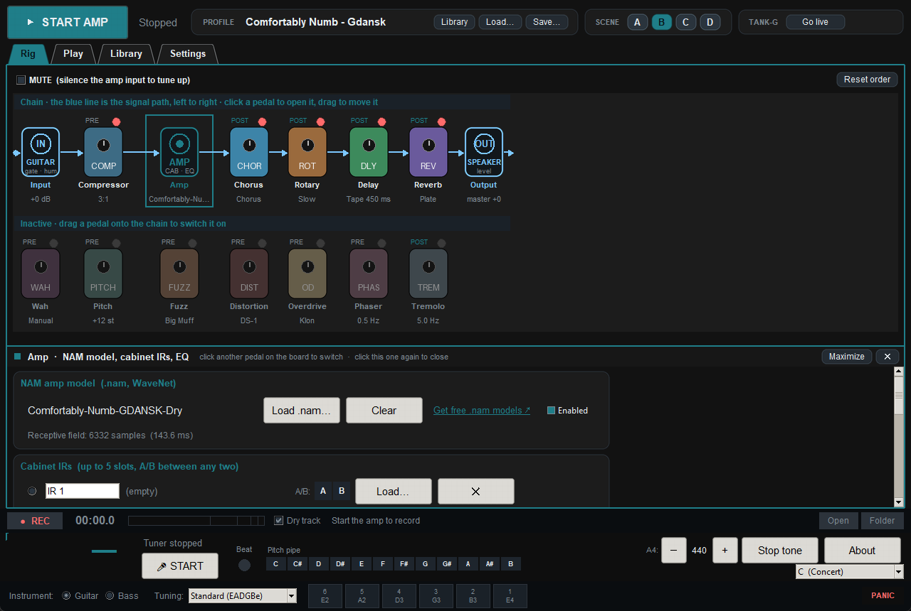
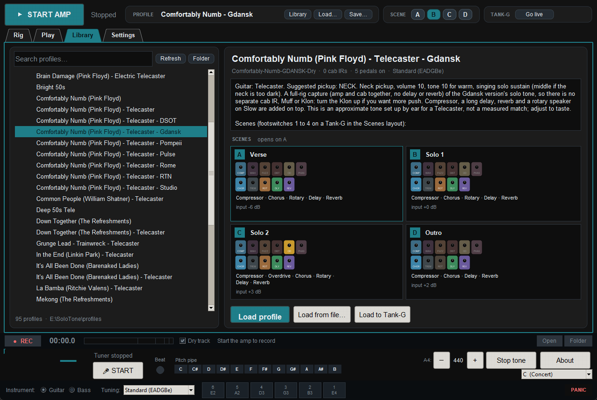
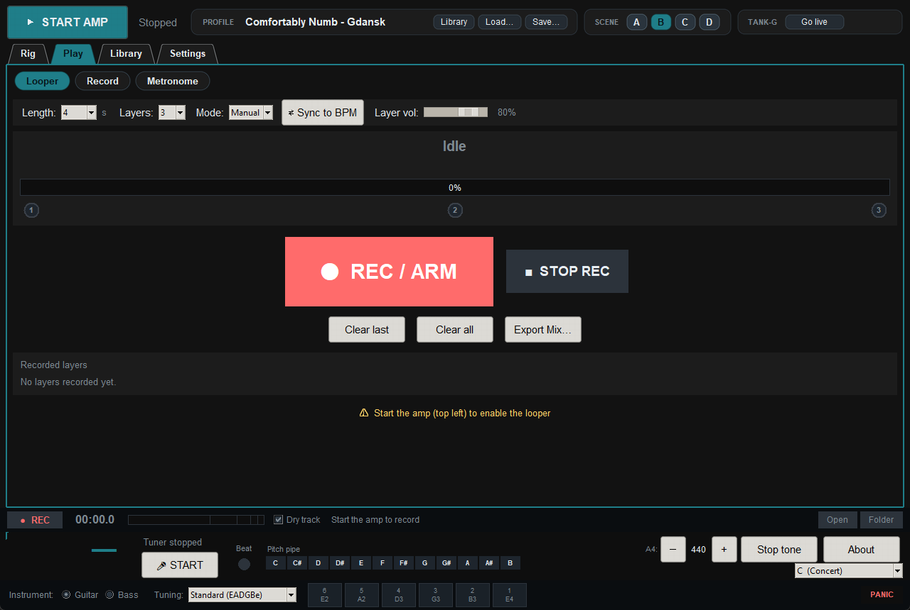
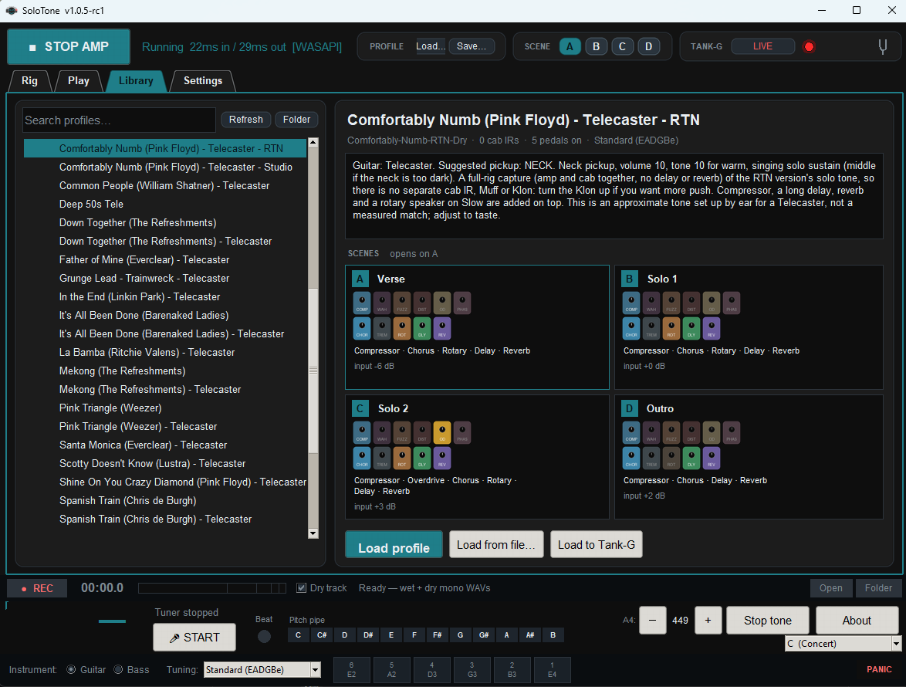
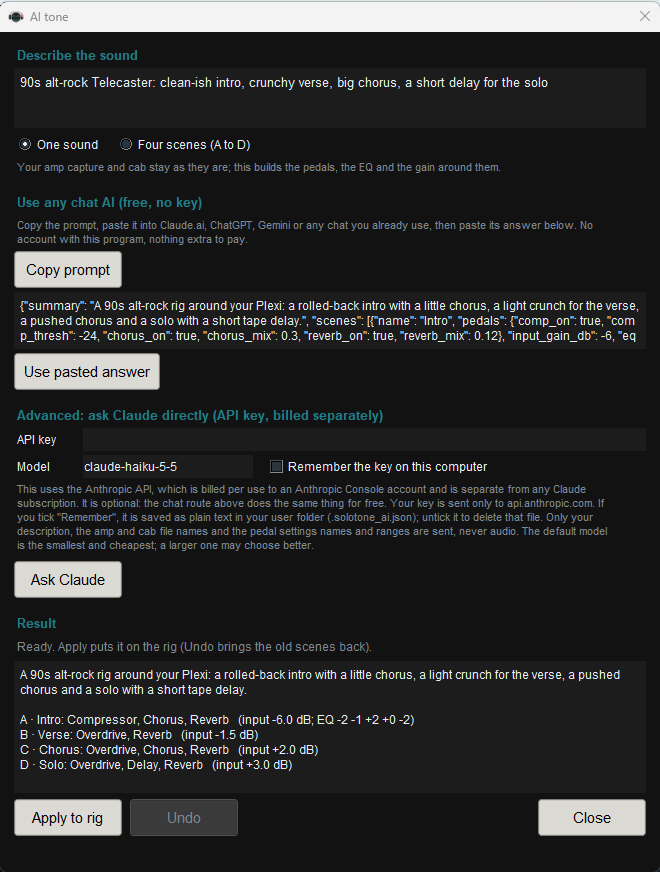
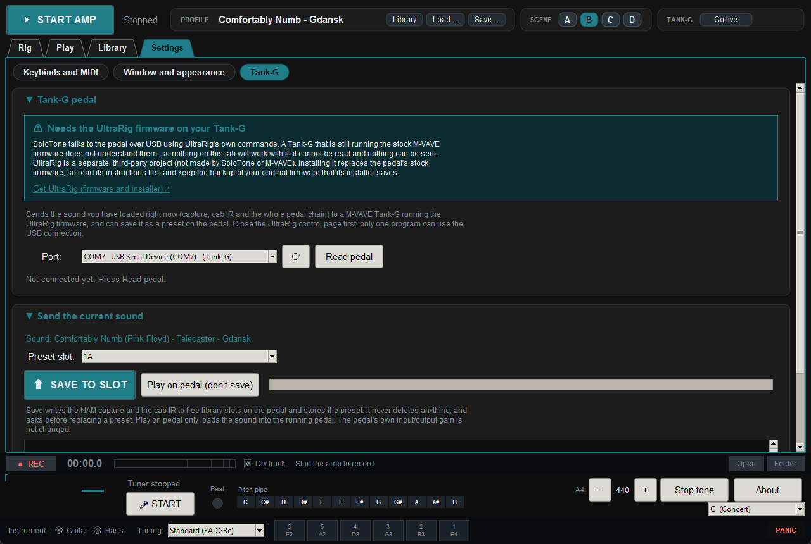

Signal path, DSP and I/O in detail.
Every tool below shares one audio callback. The measurements, formats and rates behind these descriptions are on the Specs page.
Four tabs, everything one click away.







NAM inference, cab convolution, EQ
Neural Amp Modeler captures run through a from-scratch WaveNet engine in NumPy (A1 and A2 exports, SlimmableContainer), then up to five cab IRs by overlap-add FFT convolution with A/B switching or a continuous blend, and a five-band biquad EQ with a level trim. Input gain, a block-RMS noise gate (3 ms attack, 60 ms release) and a mains-hum notch filter sit ahead of the model. Match level renders a synthetic playing signal through the chain and sets Output Gain so every sound lands at −18 dBFS RMS; a global Master Volume trims the monitors without touching a profile.
Pedal chain around an AMP marker
Compressor (soft-knee, tube-style saturation), state-variable wah (manual, auto sweep or envelope-following), a two-voice pitch shifter (octaves, fifths, detune), Fuzz Face / Tone Bender / Big Muff, four distortion voicings, overdrive with Tubescreamer, Klon and Blues Driver modes, a phaser, a rotary speaker (Slow / Fast / Brake), chorus / flanger / vibrato / doubler, tremolo, tape or digital delay and room, plate, spring, cloud or shimmer reverb. Clip stages run 4× oversampled to suppress aliasing. The order is free and splits at an AMP marker: pre-amp pedals feed the model, post-amp pedals process its output, so repeats and tails are not compressed by a distorted amp. Any pedal saves as a portable preset.
Sample-locked looper
Up to ten layers of 1–60 s, recorded from the processed output and locked to a shared sample count, so layers cannot drift. Manual mode, or Auto mode for hands-free layering; per-layer mute, and export of a layer or the whole mix to WAV.
Wet and dry recording, offline re-amp
REC in the footer of every tab writes two sample-aligned mono 32-bit float WAVs: the processed sound and the raw dry input. The tap sits after Output Gain but before Master Volume and the metronome click, and disk writes happen on a separate thread, so the audio callback never blocks. Both files open directly in Audacity, Adobe Audition or any DAW. Re-amp then runs any WAV (any rate or bit depth) through the current chain offline, at about 1.4× real time on the heaviest chain tested.
Tuning-aware pitch detection
A McLeod normalized square-difference detector with parabolic interpolation: loudness-independent, so low-output single-coil pickups work, with mains hum subtracted by least squares before detection. Pick one of 14 guitar tunings (or 4/5-string bass) and readings snap to that tuning's strings, octave-insensitively and with hysteresis; chromatic mode shows the raw nearest note.
Sample-accurate metronome
Five click kits, tap tempo and every common time signature, scheduled inside the audio callback itself, so timing is locked to the sample and independent of GUI or CPU load.
MIDI and keyboard mapping
Learn-mode mapping of any class-compliant USB-MIDI controller: knobs drive continuous parameters, pads act as footswitches (a long press does a secondary action). 46 controls are MIDI-mappable and 67 keyboard-mappable, covering pedal switches and knobs, gains, tap tempo, looper, recording, IR A/B and blend. Akai LPD8 mk2 pads can mirror state with LED feedback.
JSON Tone Profiles
A .stprofile is plain, versioned JSON holding the whole rig: model and IR paths, every pedal parameter and the chain order, EQ, gate, gains, hum filter, tuning, the pedals' MIDI mappings, and free-text notes for the guitar side (pickup, volume and tone settings). Per-pedal presets are smaller and move between profiles.
Four scenes per profile
Keep up to four variations of one sound — which pedals are on, their settings, the EQ and the input and output gain — and switch between them from the top bar, a MIDI pad or a key. A verse, two solos and an outro can live in one profile. The capture, the cab IRs and the chain order stay the same, and a profile saved before scenes simply opens as scene A.


AI tone: describe it, get the pedals
Describe a sound in words — “a singing Gilmour lead with long delay and a plate reverb” — and AI tone returns pedal settings, EQ, gain and up to four scenes around the amp capture and cab you already have loaded. There are two routes. Copy prompt builds a complete prompt for any chat AI you already use, free: paste its answer back in. Or, optionally, ask Claude directly with your own Anthropic API key, which is billed separately by Anthropic and is not covered by a Claude subscription. The answer is never trusted as it comes: every number is clamped to the real range of its control, every choice must be a known one, unknown settings are dropped and listed, and Undo brings your previous scenes back. Only your description, the amp and cab file names and the settings' names and ranges are sent — never audio.


Your tones on the Tank-G pedal
An optional add-on connects SoloTone to an M-VAVE Tank-G running the third-party UltraRig firmware (tested on alphas 11 and 13). Send a profile to a preset slot — the capture, the cab IR and the whole pedal chain, fitted to the pedal's CPU and memory — and it plays without the computer, with your four scenes as the pedal's own scenes. Or switch on Live: SoloTone becomes the pedal's remote, and every pedal you switch, knob you turn or scene you pick is sent as you do it, with nothing stored on the pedal. It uses only the USB serial connection, no USB audio, and it never deletes anything from the pedal.
SoloTone and this add-on are not made or endorsed by UltraRig or M-VAVE. The mappings are approximations: the same pedal name is not the same DSP.


Ready to plug in?
It's free to try and it runs on your own machine.
Like SoloTone? Buy me a coffee.
It's free to use and built in evenings and weekends. A tip on Ko-fi helps keep it going.